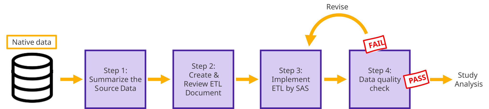

Common Question
What crosses the boundary: the coordinating center sends the research question.
What remains locally variable: study design, definitions, methods, and implementation.
Home / How it works / Methods
Technical reference
This page is the canonical destination for definitions, conversion specifications, quality rules, and analytical components. For the architecture these steps sit inside, start with How IMPRESIVE works.
Fit for purpose
Fitness is judged for a question × source pair. A converted database is not automatically ready for every question, and the assessment is repeated whenever the protocol, data period, definitions, or operating environment changes.
Where a pair is not fit for purpose, the characterisation becomes the deliverable and defines what the next round must change: a re-scoped question, extended mappings, additional sites, or an alternative design.
Semantic implementation
Compare the source lists used for ischemic stroke and statins. Local lists differ by site; select Harmonize to see every list resolve to the same standard OMOP concept and concept ID.
Distributed data networks
The approaches are parallel options with different trade-offs. More standardization can reduce site-to-site implementation variation and speed up repeated analyses, but it requires greater upfront preparation and infrastructure.
What crosses the boundary: the coordinating center sends the research question.
What remains locally variable: study design, definitions, methods, and implementation.
What crosses the boundary: study design, eligibility criteria, variable definitions, and analytic methods.
What remains locally variable: some interpretation and implementation of the protocol.
What crosses the boundary: a standardized data structure and a common analytic program.
What remains local: person-level data, access controls, governance, and documented adaptations.
Compare two common-data-model routes with different strengths and implementation demands.
Starting point
Example NHIRD drug record: a locally structured pharmacy claim contains domestic product code A039307100. The study first documents where it lives, what its dates mean, and what can be derived.
Sentinel and OMOP
Both routes can reorganize the record so common programmes know where drug exposure is represented. Sentinel emphasizes this structural layer while retaining more source terminology.
DISPENSING / DRUG_EXPOSURESource code and its provenance stay documentedOMOP additional layer
OMOP adds semantic vocabulary mapping so the local code can be represented under a shared drug concept. This can strengthen comparability but increases mapping, review, and computing requirements.
Stewardship context: Sentinel CDM was developed for the US FDA Sentinel active-surveillance programme. OMOP CDM is stewarded by the Observational Health Data Sciences and Informatics (OHDSI) community.
Structural conversion alone is not enough. Date construction, drug information, source-specific code mapping, and variable definitions must be documented and validated.
The NHIRD mapping shows how the same clinical domains are represented in OMOP and Sentinel.
Implementation evidence

Quality assurance
General common-data-model quality checks are distinct from validating whether a specific cohort or analysis behaves as intended.
Structure, formats, and identifiers.
Domain and variable availability.
Values, dates, and clinical patterns.
Cohorts, variables, frequencies, and analytic outputs compared with the protocol and source context.
3,000+ automated checks support general CDM quality assessment.
Three Qchecks, plus native-versus-CDM result comparison using a 5% difference threshold.
Three cases exercised this machinery: cross-database comparability, framework reuse, and evidence transportability.